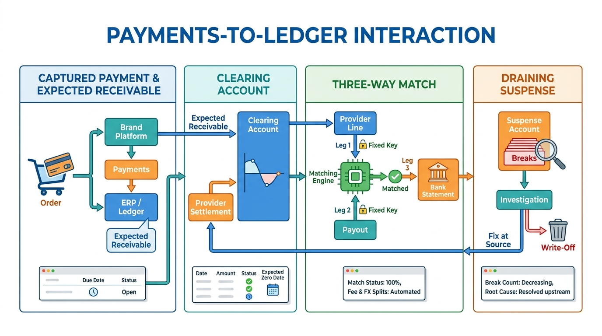

Part III — INTEGRATED: The Finance Estate as One System
Payments-to-Ledger: Connecting Providers, Brand Platforms and the ERP

Image generated by Google Gemini (gemini-3-pro-image-preview)
Part III — INTEGRATED: The Finance Estate as One System

Image generated by Google Gemini (gemini-3-pro-image-preview)